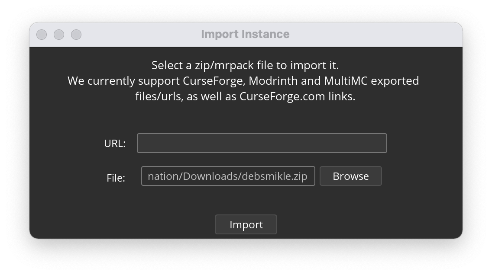
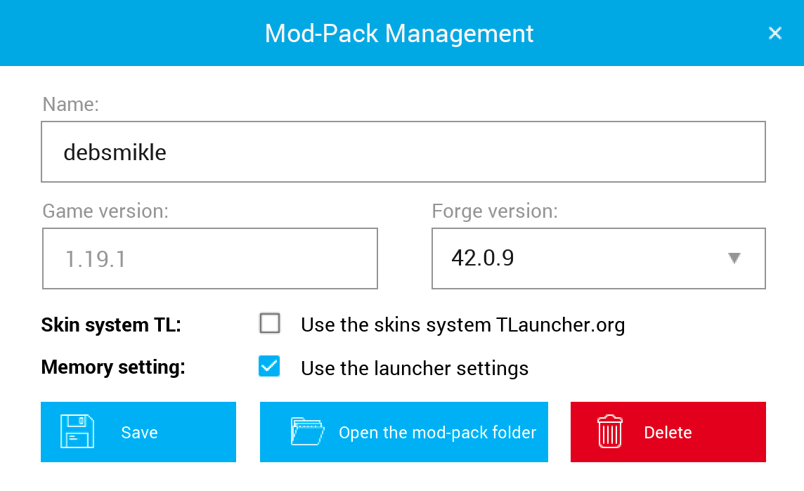

You need Minecraft: Java Edition and a compatible launcher (see section below) in order to use this modpack.
You can download the modpack by clicking here.
This modpack is compatible with any of the following launchers:
Drag and drop the ZIP file into the launcher, then choose OK in the dialog that appears.
You can then open the instance as normal.
Press the + in the bottom-left corner to add a new instance, then select Import Zip from the top bar. Select the ZIP file in your files, then choose OK and go to the next page.
Set a name (or go with the default "debsmikle"), then go to the next page.
Once everything finishes downloading, you can open the instance as normal.
Under the game Minecraft, choose Create Custom Profile.
Then, choose Or import a previously created profile.
Once everything finishes downloading, you can open the profile as normal.
Under the Instances tab, press the Import button in the top-left corner.
Select the ZIP file in your files, then choose Import.
Leave everything as-is and choose Install.
Once the instance finishes being imported, you can open the instance as normal.
First, press the TLMods button. Choose the Create button at the top.
write "debsmikle" as the modpack name. Set the game version to 1.19.1 if it's not set to that already - everything else can be as-is. Choose Create.
"debsmikle" should now be a selected modpack. Open the dropdown, and select the management icon next to "debsmikle". Then, choose Open the mod-pack folder.
You need to enable hidden files on Windows (guide) and macOS (do CMD+SHIFT+.)! Extract the ZIP and open the contents of either the .minecraft or overrides folder. Copy or move the contents of that folder into the folder that was just opened in TLauncher.
Under which version you want to select for launching Minecraft, choose Release debsmikle.
You can now launch the game as normal.
Upon first launch, you will most likely see a Jumploader splash screen. TLauncher currently only supports Forge, and this mod makes it load Fabric instead.
Under Minecraft: Java Edition, go to Installations, then New installation.
Set the version to release 1.19.1.
Save and start this installation, and then immediately close the game as well as the launcher once you get to the main menu.
Visit the Fabric download page, and download the installer. When you open it, set the Minecraft version to 1.19.1.
Once it installs, open the Minecraft launcher. Go back to Installations, but this time choose the three dots next to "fabric-loader-1.19.1", then choose Edit.
Set the icon to an oak wooden plank, and the name to "debsmikle".
For the game directory, select BROWSE and you should appear in the default Minecraft game directory. Make a new folder here as a place to store the modpack files. I personally have a folder named "instances", and within it is a folder named "debsmikle".
Because we installed Fabric while the launcher was closed, it should still be the default. Try playing with the installation "debsmikle", and check the box that says "I understand the risks. Don't warn me again about this installation." before pressing Play again.
Once the game starts, immediately close the game once you get to the main menu. You can keep the launcher up if you'd like.
You need to enable hidden files on Windows (guide) and macOS (do CMD+SHIFT+.)! Extract the ZIP and open the contents of either the .minecraft or overrides folder. Copy or move the contents of that folder into the modpack file folder we made.
If you closed the launcher, reopen it. With the installation "debsmikle" selected, you can launch the game as normal.